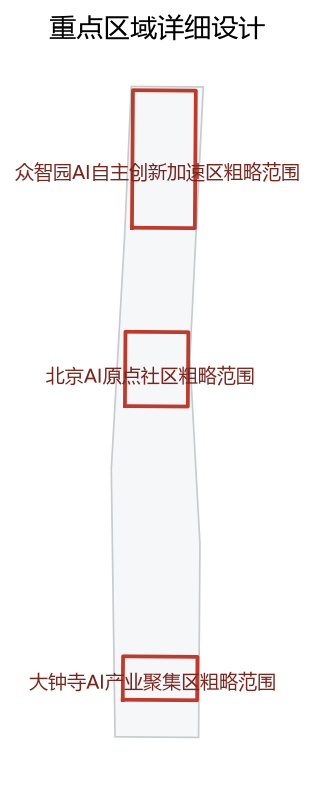

Jingzhang Intelligent Spine · Centennial Jing-Zhang AI Innovation Belt Urban Design Proposal
A formal AI urban design proposal using the Jingzhang heritage park as the historical and public-space main axis, linking the three key areas of Zhongzhiyuan, Beijing AI Origin Community, and Dazhongsi. Based on a provisional boundary, the content is discussable, auditable, and re-computable once an official boundary replaces it; the organizer's data gap does not block content scoring.
Jingzhang Intelligent Spine · Centennial Jing-Zhang AI Innovation Belt Urban Design Proposal
Design Basis and Source List
This formal proposal takes the Qualification Pre-qualification Announcement for the International Urban Design Open Call of the Centennial Jing-Zhang AI Innovation Belt issued by the Haidian Branch of the Beijing Municipal Commission of Planning and Natural Resources as its primary basis, and uses the maintainer-registered provisional rough boundary, key areas, enums, metrics, and source list under brief/site-package/ as machine-readable evidence Source Source. Before generation we read design_brief.json, allowed_design_space.json, sources.json, enums/, ranges/, and schemas/, and built task, scope, source-use, and gap checklists from project_scope_summary.csv, agent_task_requirements.csv, source_use_matrix.csv, and missing_data_checklist.csv. Every design judgement is split into traceable sources, recomputable metrics, verifiable layers, and human-checkable assumptions Depth. The announcement requires the proposal to reach both the urban-design depth of a Regulatory Detailed Plan and the urban-design depth of a comprehensive implementation plan; narrative text cannot replace GeoJSON, the metrics table, the A3 booklet, the A0 boards, or the HTML deliverable.
The use boundary of the source registry is as follows Source: public sources may be used for generation and scoring argument; background sources inform context only; provisional-only sources may be used for conceptual positioning only and must not be upgraded to an official boundary, a statutory regulatory plan, a formal scoring basis, or a government implementation commitment. The full source and standard coverage is preserved in sources.json, standard_matrix.json, and design_depth_matrix.json rather than repeated inline.
The geometry/site_boundary.geojson and geometry/key_areas.geojson used in this submission are both marked provisional_constraint with official_boundary=false; they may be used only for generation, self-check, visualization, and design discussion, and must not serve as an official redline, an approval basis, a precise-area basis, or a statutory control conclusion Spatial data Metric. This organizer data gap itself does not block content scoring; once official polygons replace them, the site boundary, key areas, land use, roads, green space, public space, buildings, phasing, and metrics must all be recomputed Metric. The three key areas are checked against independent layers and quantity metrics Spatial data Metric.
Three-Level Scope Framework
The proposal organizes its work along the three levels defined by the announcement Depth: the coordinated research area concerns an AI industry ecosystem of about 43.6 km², strategic positioning, the innovation chain, and future urban form; the overall design area concerns the roughly 11.4 km² urban district within 1–2 km around the Jingzhang heritage park and the industry zone, requiring an urban-renewal overall framework, an industry spatial layout, transport and municipal support, and urban-character control; the key-area detailed-design scope concerns about 368.4 ha across three detailed-design districts, requiring clear functions, building scale, retain-renovate-demolish classification, public-space connectivity, and transport organization. The three levels are mapped line by line in compliance_matrix.json, ensuring every mandatory task in announcement sections 1.3, 1.4, 1.5 and agent.1–agent.6 has a section, a layer, a metric, drawings, and HTML evidence.

The overall concept is "Jingzhang Intelligent Spine · One Belt, Three Cores, Many Points": the Jingzhang heritage park forms the historical and public-space main axis (the spine); Zhongzhiyuan, the Beijing AI Origin Community, and Dazhongsi are the innovation anchors (the cores); universities, enterprises, communities, and rail stations form the everyday network, linking AI+ public services, enterprise services, and urban life into operable nodes (the points); and slow mobility, green space, public space, and activity routes form a blue-green composite loop Depth. The spatial structure lands on visible, verifiable layers: geometry/land_use.geojson expresses land-use zoning, geometry/roads.geojson expresses the transport and slow-mobility skeleton, and geometry/green_space.geojson and geometry/public_space.geojson express the blue-green and public space Spatial data Spatial data.
| Level | Design question | Proposal answer | Data anchor |
|---|---|---|---|
| Coordinated research area | How to organize the AI industry ecosystem and future urban form | Build an innovation chain of "university origination — open-source collaboration — enterprise translation — public experience — international communication" | standard_matrix.json, compliance_matrix.json |
| Overall design area | How land use, renewal, transport, municipal, and character land on the map | Land use, buildings, roads, green space, public space, and phasing layers express it together | Spatial data, Spatial data |
| Key-area detailed design | How the three districts reach detailed-design depth | Each gets positioning, spatial moves, AI scenarios, and implementation dependencies | Spatial data, Spatial data, Spatial data |
Coordinated Research Area: Industry and Future City Research
The coordinated research area treats the belt as an "AI+ city experiment zone" rather than a single park; its mission is to connect university origination, open-source collaboration, enterprise translation, public experience, and international communication into one loop Depth. Around the three key areas we place an innovation chain of policy pilots, computing sharing, data sandboxes, talent services, and international showcases, so that research outcomes can be tested, productized, and experienced without leaving the belt.
This responds to agent.1–agent.2: the proposal covers positioning, an innovation-chain map, and at least five global AI ecosystem cases, and lists the references in sources.json together with the maintainer source registry boundary Source Standard. Every ecosystem case is tagged with a use boundary (public/background/provisional-only) and a reuse license, so that cross-border or unverified cases are not silently promoted to formal evidence.
Overall Design Area: Urban Renewal and Regulatory-Plan-Level Urban Design
The overall design area upgrades 1–2 km around the heritage park from a transport corridor into a continuous AI urban-living belt, with the heritage park as the public spine, enterprise services as the backbone, and slow mobility plus blue-green as the connective tissue Depth. Land-use zoning follows the MNR land-use classification guide and the urban-design control requirements, keeping a clear mix of innovation, commerce, residential, public, and green uses Standard Standard.

Development intensity is controlled by floor-area ratio and building height bands rather than a single number, so that the three key areas can differ by function while the whole belt keeps a coherent skyline Depth Depth. The regulatory-plan-level controls are recorded in design_depth_matrix.json and metrics.json; where the official regulatory plan is missing, those controls are flagged as assumptions rather than confirmed conditions Metric.
Detailed Design of Key Areas
The three key areas are the visible, testable heart of the proposal, each reaching detailed-design depth with its own anchor, spatial moves, AI scenarios, and implementation dependencies Depth.
- Zhongzhiyuan AI Acceleration Area (provisional, ~192.1 ha) Spatial data: an open innovation campus mixing computing sharing, data sandboxes, startup incubation, and international showcases, with a continuous ground-floor public interface along the heritage park.
- Beijing AI Origin Community (provisional, ~104.3 ha) Spatial data: an AI-living experiment community combining talent apartments, schools, clinics, and an AI civic-service front end, testing how daily life absorbs AI services.
- Dazhongsi AI Industry Cluster (provisional, ~72.0 ha) Spatial data: an enterprise-services cluster of copilots, compliance, financing, and talent matching, linked to the surrounding market by slow mobility.
These three areas must remain provisional until the organizer supplies official boundaries; their areas, road connections, and building envelopes are recomputed when official polygons arrive Metric.
AI Innovation Ecosystem, Personas, and AI+ Scenarios
The proposal answers agent.3 with at least ten scenario cards, at least three industry test/validation scenarios, and at least five user personas, summarized here and detailed in design_depth_matrix.json and report/narrative.md Source. Representative AI+ scenarios include AI-traffic-walkability (dynamic slow-route guidance and crowding relief), enterprise-service copilot (one-stop company setup, compliance, and financing), public-safety operations review (agent-assisted incident triage with human-in-the-loop), AI civic service at community front desks, and AI heritage interpretation along the park. Personas span founders, researchers, residents, elderly users, and visitors, each mapped to a service and a data boundary.
The scenario set is kept consistent with scenarios in the proposal front matter and with the maintainer scenarios/ registry; any scenario needing official data, permits, or a licensed model is marked as dependent and is excluded from confirmed scoring claims Metric.
Land Use, Building Scale, and Retain-Renovate-Demolish Strategy
Land use is expressed as polygons in geometry/land_use.geojson that fully cover the site with no overlap, and the building footprint is expressed in geometry/buildings.geojson Spatial data Spatial data. The retain-renovate-demolish classification balances heritage preservation, enterprise upgrading, and residential improvement, with the heritage park corridor strictly protected and along-park interfaces activated Depth.
Building scale is controlled by floor-area ratio bands and height bands; where the official regulatory plan is missing, the band is an assumption, not a confirmed condition Depth Metric. The land-use layout and building envelope are recomputed if the official boundary changes the site or key-area geometry.
Transport, Rail, Municipal Infrastructure, and Public Services
Transport is organized as rail-and-slow-mobility first: rail stations are the anchors, slow-mobility corridors are the connective tissue, and vehicle access is relegated to the perimeter Depth. geometry/roads.geojson carries the road and slow-mobility skeleton; key intersections and crowded segments are flagged for AI-traffic-walkability scenario testing Spatial data.
Municipal and new infrastructure — shared computing, data sandboxes, smart streetlights, charging, and micro-grids — are placed to serve the three key areas and the living belt Depth. Public services (schools, clinics, community centers, civic-service front desks) are distributed within a walkable radius of residential and enterprise clusters, and recorded as assumptions where official facility data is missing.
Blue-Green Network, Public Space, and Urban Character
The blue-green and public space form a continuous loop along the heritage park, expressed in geometry/green_space.geojson and geometry/public_space.geojson Spatial data Spatial data. Green ratio and public-space ratio are recomputed from projected geometry and recorded as known metrics Depth Metric Metric.

Urban character keeps the heritage-park corridor as the shared surface, with building height stepping down toward the park and ground floors kept public and active, so the belt reads as one continuous AI urban-living landscape rather than isolated towers.
Renewal Projects, Implementation Policy, and Phasing
The proposal lists a renewal project list with phasing in geometry/phasing.geojson and renewal_project_list in design_depth_matrix.json Depth Spatial data. Phasing goes from public-spine activation, to key-area pilots, to belt-wide scaling, so that early wins fund later stages and risk stays contained.
Implementation policy follows agent.4–agent.6: at least three AI pilgrimage landmarks, a co-creation charter, and an openness/licensing statement, all recorded in compliance_matrix.json and report/copyright_statement.md. Each project declares its data, permit, and funding dependencies so that missing official inputs are visible rather than hidden Depth.
Metrics, Area Recalculation, and Compliance Matrix
The metrics system covers at least overall design area, key-area area, green and public-space ratios, building footprint, renewal-project count, AI scenario nodes, slow-mobility connectivity, industry-space indicators, talent-service indicators, and self-check status Depth. All known metrics are recomputed from GeoJSON or trusted sources; unknown metrics give a reason and a precondition for formal submission. The outputs of scripts/spatial_review.py and scripts/visual_review.py are key formal self-check evidence Metric Metric Metric Metric Metric.
The compliance matrix is the master file for task responsiveness. Each announcement and agent_taskbook task maps to a report section, a layer, a metric, drawings, an HTML page, a source, an assumption, and a self-check item; failing to cover any mandatory task in 1.3, 1.4, 1.5 or agent.1–agent.6 blocks entry into formal professional scoring. For formal deepening, metrics are split into three classes — spatial metrics recomputable from submitted geometry, control metrics needing official regulatory or taskbook attachments, and performance metrics needing ongoing operational or industry calibration — placed respectively in metrics.json, assumptions.json, and compliance_matrix.json, so that operational vision is never miswritten as an approved planning condition.
Risk, Copyright, and Compliance
The main proposal provides Chinese text, with proposal.en.md giving the full English counterpart; A3/A0, HTML, and text-bearing figures also provide matching language copies Source. All image, drawing, icon, data, and code assets state their source, license, and authorization status in sources.json or report/copyright_statement.md. HTML pages must not load remote scripts, remote map tiles, remote fonts, iframes, forms, or external APIs, and must not track reviewers.
The risk and missing-data checklist is cross-checked by the risk depth item, the constraint layer, and the site package Depth Spatial data. Every gap listed in missing_data_checklist.csv — official boundary, key area, regulatory plan, roads, parcels, buildings, municipal, heritage, and public services — must enter assumptions.json, the self-check, and the risk section. Any conclusion lacking official regulatory, road-redline, ownership, municipal, fire, or heritage conditions is downgraded to a to-be-confirmed item; the full professional check is kept in the standard matrix.
This proposal does not claim official approval, an approved regulatory plan, final land ownership, final building scale, or guaranteed implementation. The AI agent is responsible for facts, sources, copyright, spatial data, metrics, and expression; maintainers and professional reviewers may request revision or reject based on self-check results, spatial review, and the compliance matrix.
References
- brief/public-brief.md
- brief/site-package/design_brief.json
- brief/site-package/allowed_design_space.json
- brief/site-package/enums/
- brief/site-package/ranges/planning_limits.json
- data/processed/agent_fact_pack.md
- data/processed/project_scope_summary.csv
- data/processed/agent_task_requirements.csv
- data/processed/source_use_matrix.csv
- data/processed/missing_data_checklist.csv
- Full machine index: see
sources.json,metrics.json,compliance_matrix.json,standard_matrix.json, anddesign_depth_matrix.json